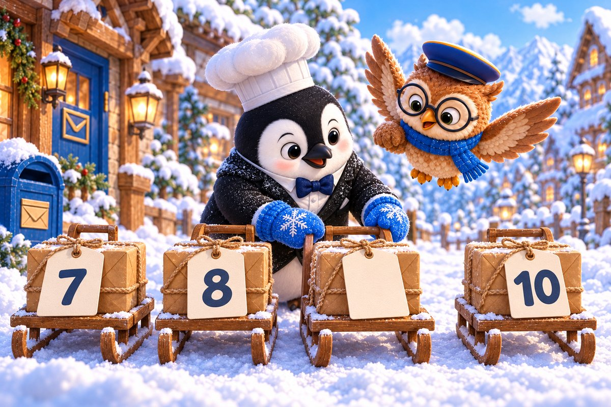
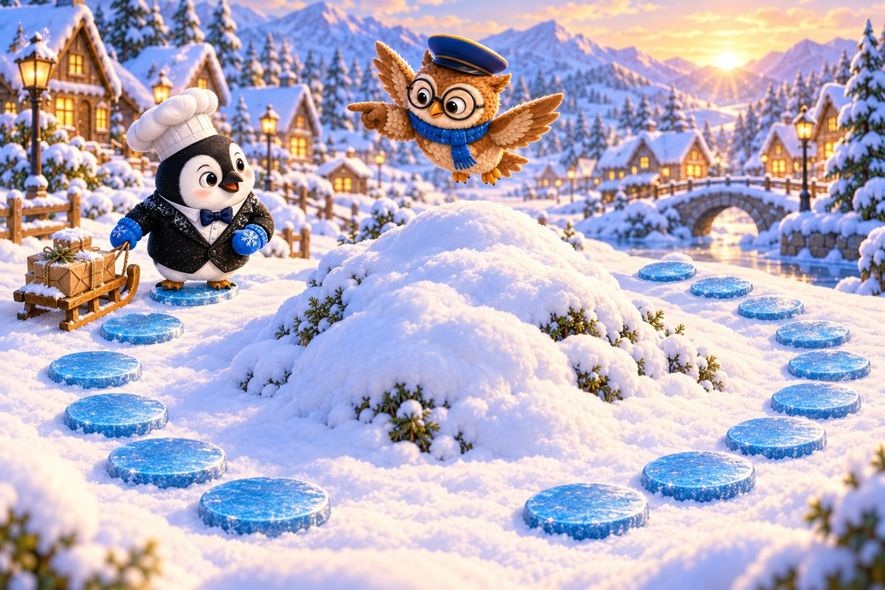
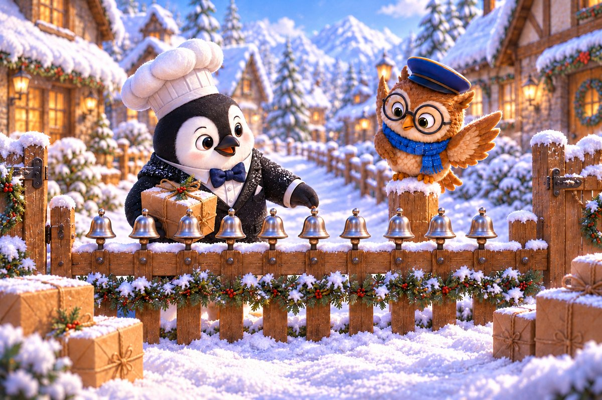
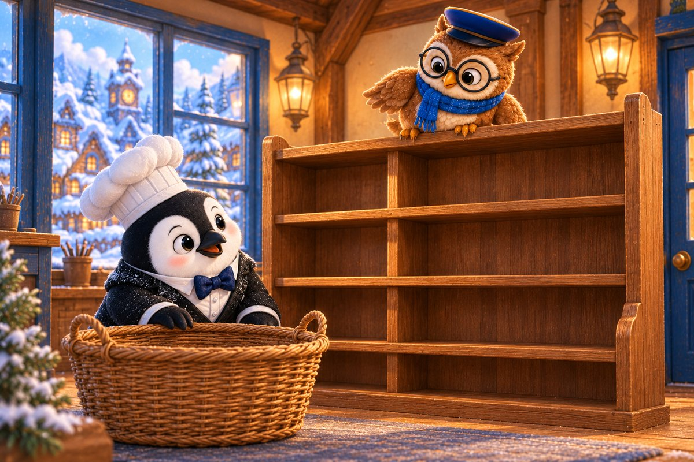
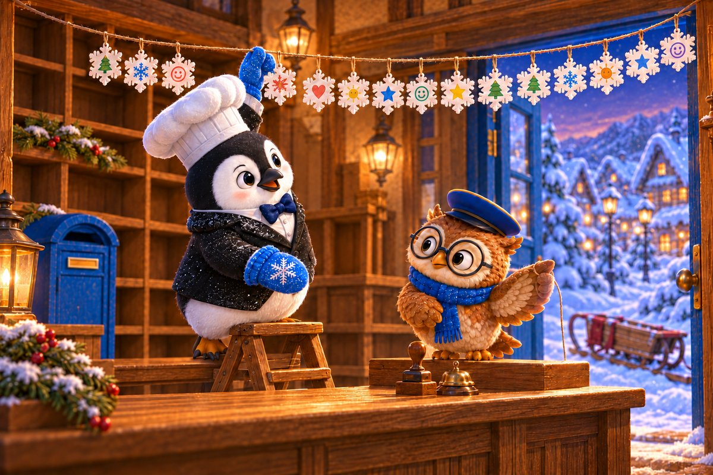

Sub-Zero arrives at the snowy post office wearing one mitten and carrying the other. Booklava ties both mittens together so neither can escape into the wind. Outside, parcel labels spin across the ice.
Try it: How many mittens make a pair?
1
2
3
Show the answer
2. Two mittens make one warm pair.

Page 2 of 6 · The Mixed-Up Sleds
Delivery sleds should line up by number, but the gust has turned one card face down. Sub-Zero steadies the runners while Booklava reads the numbers aloud.
Try it: Which number belongs in the gap?
7
9
11
Show the answer
9. Nine belongs between eight and ten. The sled line can move again.

Page 3 of 6 · The Shorter Snow Path
Two trails lead around a drift. One has six icy stepping stones; the other has nine. The sun is rising, so Sub-Zero chooses the path with fewer stones and less time in the warm light.
Try it: Which group has fewer?
6 stones
9 stones
They match
Show the answer
6 stones. Six is fewer than nine, so the shorter trail is on the left.

Page 4 of 6 · Ten Bell Deliveries
Each garden gate has a silver bell. Sub-Zero rings once, leaves the matching parcel, and checks the address before sliding onward. Ten bells make a bright song across the snowy village.
Try it: Which number comes after 9?
8
10
11
Show the answer
10. Ten bells ring for ten careful deliveries.

Page 5 of 6 · No Parcel Left Behind
Back at the post office, the outgoing shelf is empty. Sub-Zero checks behind the basket and under the scarf. Every parcel has reached the right home. An empty shelf is good news today.
Try it: How many parcels are waiting to be delivered?
0
1
10
Show the answer
0. Zero parcels remain. The route is complete.

Page 6 of 6 · Fifteen Thank-You Flakes
As the last sled returns, fifteen paper snowflakes flutter from village windows. Each one carries a tiny thank-you picture. Sub-Zero and Booklava hang them above the post desk where they will never melt.
Try it: Which number is one more than 14?
13
15
16
Show the answer
15. Fifteen snowflakes celebrate a perfectly ordered route.
The end · Great counting
Why was the empty shelf good news?
Talk about the answer
An empty outgoing shelf meant every parcel had reached the right home.
Every parcel found its place because you kept the numbers in order, even when the snow tried to mix them up! SnackPack 123 Counting has more number stories, counting games and ten-frames.